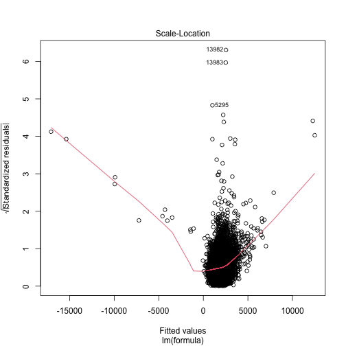
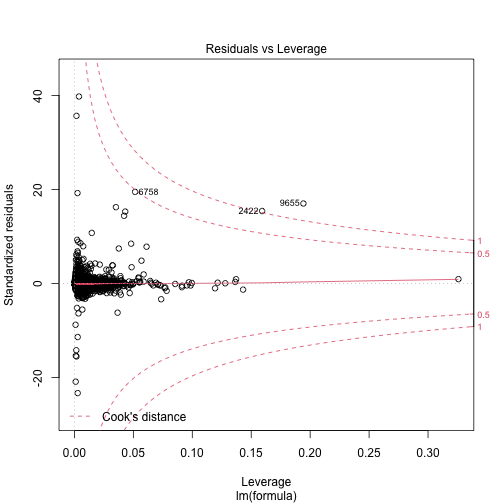
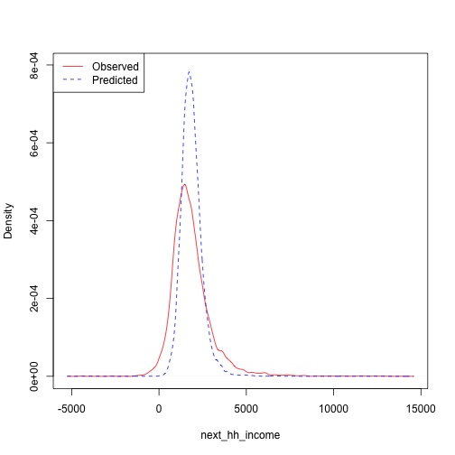
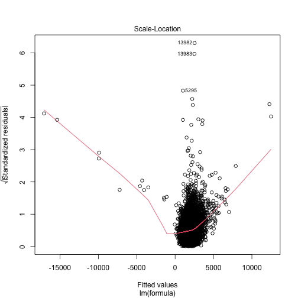
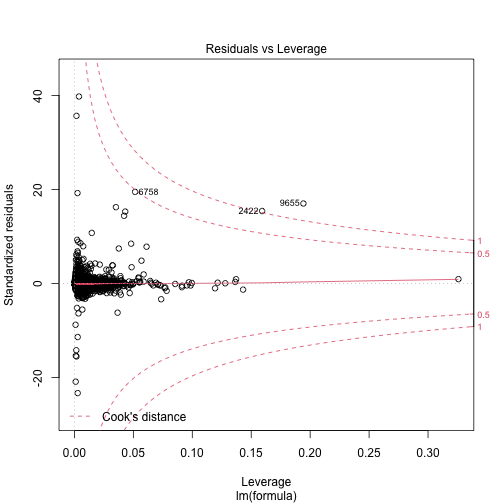
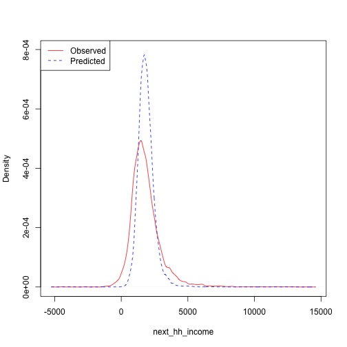

Household Income
Household Income
Household disposable income is a well known indicator of mental well-being (Graham 2009). Estimating this is a crucial instrument for the effects of many policy interventions
The output variable is monthly household disposable income. This is calculated as a composite using several variables. Rent, mortgages, and council tax are subtracted from net household income and adjusted by household size. This value is then adjusted for yearly inflation estimates.
This produces a continuous distribution of pounds per month available for a household to spend as it likes. This is plotted below with a median income of \(~£1250\).
continuous_density("data/transitions/hh_income/ols/hh_income_2018_2019.rds", "next_hh_income")
plot of chunk hh_income_data
Methods
To estimate this variable Ordinary Least Squares (OLS) linear regression is used. This is a common technique for estimating Gaussian distributed variables that is easy to implement using base R.
Data
The formula for this linear regression is given as
Each variable included is defined as follows. Each variable with discrete values is defined in the data tables section of this documentation here.
sex. Individual’s biological sex. (Dilmaghani 2018)
ethnicity. Individual ethnicity. Discrete string values White British, Black African, etc. (Clemens and Dibben 2014)
region. Administrative region of the UK. Discrete strings such as London, North-East. (Brewer et al. 2007)
household income. Previous household income values are a strong indicator of current value. (Dilmaghani 2018)
job_sec. NSSEC code for individual’s employment. Ordinal values describing job quality. (Clemens and Dibben 2014)
labour state. Is a person employed, unemployed, student etc. Discrete states. (Dilmaghani 2018)
education state. Highest attain qualification. Ordinal values based on UK government education tiers (Eika, Mogstad, and Zafar 2019)
SF_12_MCS. Mental well-being. Continuous score indicating overall mental-wellbeing. is this an indicator of hh_income? (Viswanathan, Anderson, and Thomas 2005)
housing quality. Ordinal values indicating number of appliances in household. (Brewer et al. 2007)
Results
Model coefficients and diagnostics are displayed below. To summarise - r squared of 0.21 indicates reasonable fit. - Gender not significant. Some ethnicities see increases. Only London has higher income. High quality jobs eanr more. PT employed earn less students earn more. Housing quality strong indicator of higher income. - diagnostic plots show underdispersion. Some extreme outlier values need investigating. - overall decent fit.
##
## Call:
## lm(formula = formula, data = data, weights = weight)
##
## Weighted Residuals:
## Min 1Q Median 3Q Max
## -3725.0 -33.1 0.0 15.9 6347.0
##
## Coefficients:
## Estimate Std. Error t value Pr(>|t|)
## (Intercept) 5.527e+02 1.515e+02 3.647 0.000266 ***
## hh_income 3.161e-01 8.437e-03 37.470 < 2e-16 ***
## age 8.848e+00 1.044e+00 8.475 < 2e-16 ***
## factor(sex)Male 5.537e+01 3.277e+01 1.690 0.091094 .
## relevel(factor(ethnicity), ref = "WBI")BAN -5.161e+02 2.259e+02 -2.285 0.022319 *
## relevel(factor(ethnicity), ref = "WBI")BLA -4.172e+02 1.383e+02 -3.016 0.002566 **
## relevel(factor(ethnicity), ref = "WBI")BLC -4.372e+02 2.009e+02 -2.176 0.029590 *
## relevel(factor(ethnicity), ref = "WBI")CHI 8.409e+01 2.412e+02 0.349 0.727426
## relevel(factor(ethnicity), ref = "WBI")IND -2.014e+02 1.034e+02 -1.948 0.051437 .
## relevel(factor(ethnicity), ref = "WBI")MIX 3.101e+01 1.293e+02 0.240 0.810448
## relevel(factor(ethnicity), ref = "WBI")OAS -4.874e+02 1.537e+02 -3.171 0.001521 **
## relevel(factor(ethnicity), ref = "WBI")OBL -8.141e+02 7.165e+02 -1.136 0.255940
## relevel(factor(ethnicity), ref = "WBI")OTH -2.691e+02 2.589e+02 -1.039 0.298682
## relevel(factor(ethnicity), ref = "WBI")PAK -4.150e+02 1.433e+02 -2.896 0.003786 **
## relevel(factor(ethnicity), ref = "WBI")WHO -1.086e+02 7.215e+01 -1.504 0.132498
## relevel(factor(region), ref = "South East")East Midlands -1.175e+02 6.959e+01 -1.688 0.091404 .
## relevel(factor(region), ref = "South East")East of England -1.822e+01 6.217e+01 -0.293 0.769491
## relevel(factor(region), ref = "South East")London 2.758e+02 6.254e+01 4.410 1.05e-05 ***
## relevel(factor(region), ref = "South East")North East -1.602e+02 8.555e+01 -1.872 0.061192 .
## relevel(factor(region), ref = "South East")North West 5.556e+01 6.347e+01 0.875 0.381353
## relevel(factor(region), ref = "South East")Northern Ireland 6.979e+01 1.109e+02 0.629 0.529315
## relevel(factor(region), ref = "South East")Scotland -5.225e+01 7.574e+01 -0.690 0.490307
## relevel(factor(region), ref = "South East")South West 4.934e+01 6.389e+01 0.772 0.439916
## relevel(factor(region), ref = "South East")Wales 4.446e+01 9.399e+01 0.473 0.636239
## relevel(factor(region), ref = "South East")West Midlands 6.790e+01 6.726e+01 1.009 0.312762
## relevel(factor(region), ref = "South East")Yorkshire and The Humber 5.072e+01 6.796e+01 0.746 0.455500
## relevel(factor(education_state), ref = "1")0 1.738e+02 1.323e+02 1.314 0.188992
## relevel(factor(education_state), ref = "1")2 4.084e+02 1.328e+02 3.076 0.002101 **
## relevel(factor(education_state), ref = "1")3 5.270e+02 1.374e+02 3.835 0.000126 ***
## relevel(factor(education_state), ref = "1")5 4.471e+02 1.391e+02 3.214 0.001315 **
## relevel(factor(education_state), ref = "1")6 5.200e+02 1.339e+02 3.882 0.000104 ***
## relevel(factor(education_state), ref = "1")7 7.634e+02 1.360e+02 5.611 2.06e-08 ***
## relevel(factor(job_sec), ref = "3")1 1.637e+02 8.293e+01 1.974 0.048445 *
## relevel(factor(job_sec), ref = "3")2 1.012e+02 6.203e+01 1.632 0.102765
## relevel(factor(job_sec), ref = "3")4 -1.761e+02 5.211e+01 -3.379 0.000730 ***
## relevel(factor(job_sec), ref = "3")5 -3.760e+01 6.157e+01 -0.611 0.541389
## relevel(factor(job_sec), ref = "3")6 -1.692e+02 7.413e+01 -2.283 0.022435 *
## relevel(factor(job_sec), ref = "3")7 -2.726e+02 5.052e+01 -5.396 6.96e-08 ***
## relevel(factor(job_sec), ref = "3")8 -3.785e+02 6.139e+01 -6.164 7.33e-10 ***
## relevel(factor(job_sector), ref = "1")-8 -1.380e+02 4.375e+01 -3.154 0.001616 **
## relevel(factor(job_sector), ref = "1")-2 -3.071e+02 4.366e+02 -0.703 0.481797
## relevel(factor(job_sector), ref = "1")-1 -3.460e+01 2.374e+02 -0.146 0.884120
## relevel(factor(job_sector), ref = "1")2 -8.964e+01 4.390e+01 -2.042 0.041195 *
## ---
## Signif. codes: 0 '***' 0.001 '**' 0.01 '*' 0.05 '.' 0.1 ' ' 1
##
## Residual standard error: 160 on 10946 degrees of freedom
## (126 observations deleted due to missingness)
## Multiple R-squared: 0.1762, Adjusted R-squared: 0.173
## F-statistic: 55.73 on 42 and 10946 DF, p-value: < 2.2e-16
 

References
Brewer, Mike, Alastair Muriel, David Phillips, and Luke Sibieta. 2007. “Poverty and Inequality in the UK: 2008.”
Clemens, Tom, and Chris Dibben. 2014. “A Method for Estimating Wage, Using Standardised Occupational Classifications, for Use in Medical Research in the Place of Self-Reported Income.” BMC Medical Research Methodology 14 (1): 1–8.
Dilmaghani, Maryam. 2018. “Sexual Orientation, Labour Earnings, and Household Income in Canada.” Journal of Labor Research 39 (1): 41–55.
Eika, Lasse, Magne Mogstad, and Basit Zafar. 2019. “Educational Assortative Mating and Household Income Inequality.” Journal of Political Economy 127 (6): 2795–835.
Graham, Hilary. 2009. Understanding Health Inequalities. McGraw-hill education (UK).
Viswanathan, Hema, Rodney Anderson, and Joseph Thomas. 2005. “Nature and Correlates of SF-12 Physical and Mental Quality of Life Components Among Low-Income HIV Adults Using an HIV Service Center.” Quality of Life Research 14 (4): 935–44.